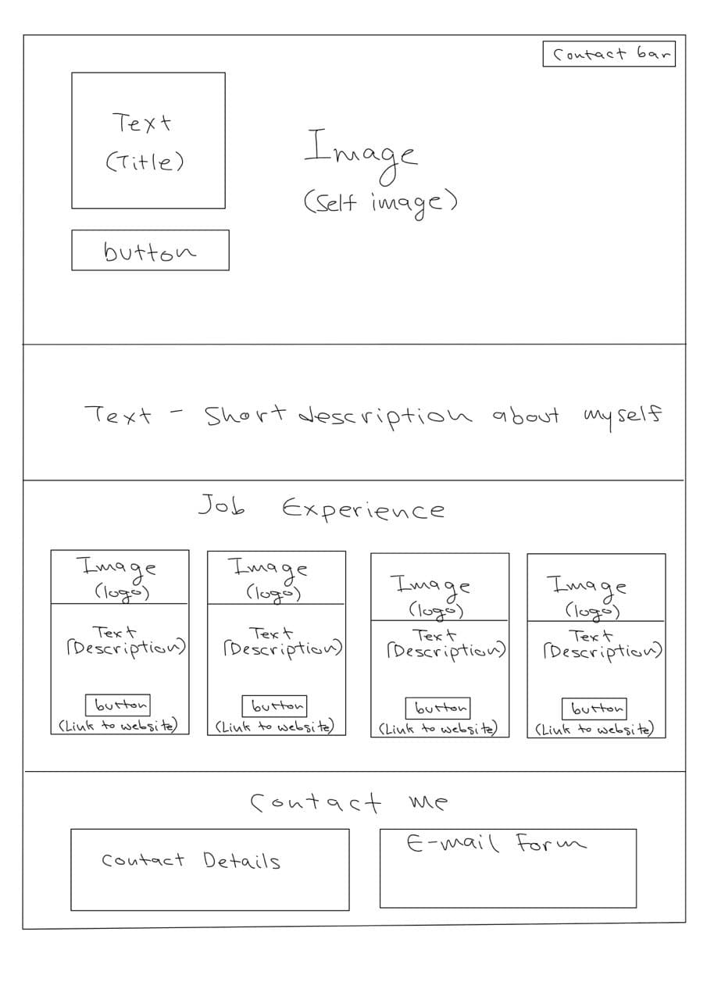
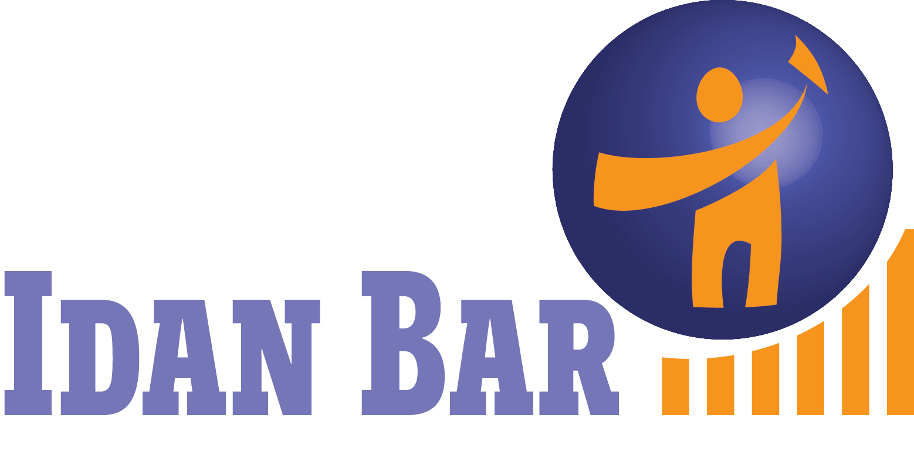
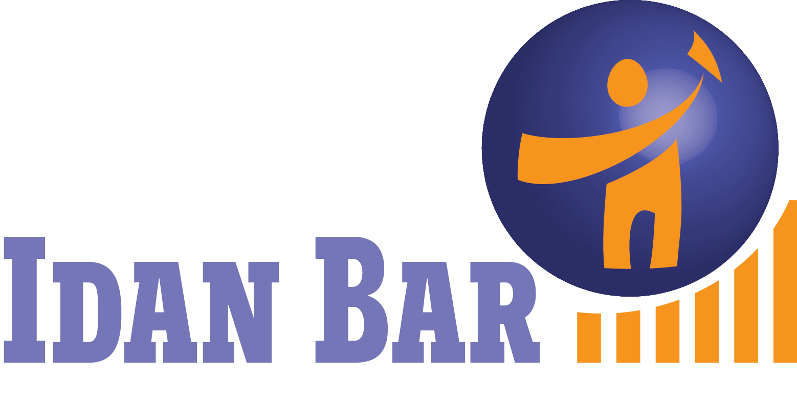
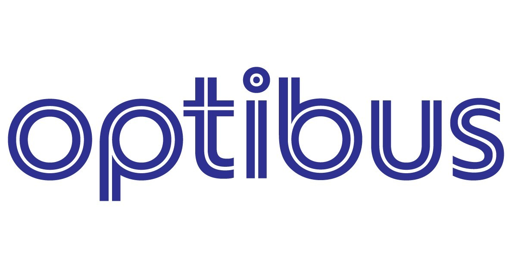
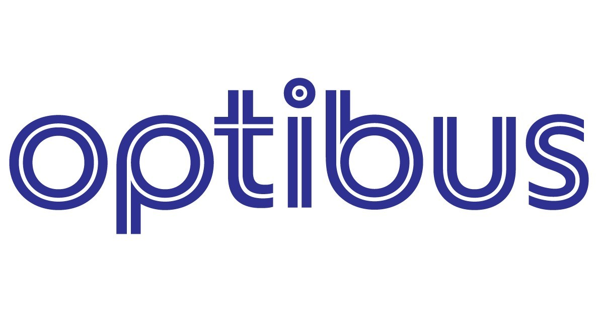

"שאלות הכוונה לתכנון UX:"
"א. קהל היעד של האתר- מעסיקים פוטנציאלים.
ב. המטרה הראשית של האתר היא להציג את קורות החיים שלי למי שמעוניין להעסיק אותי.
ג. מטרה משנית- להציג את קורות החיים שלי לאנשים נוספים שזה רלוונטי אליהם.
ד. המשתמש יבצע באתר את הפעולות הבאות: כניסות לאתר, פניות ליצירת קשר, לחיצות על לינקים. מדדי ההצלחה: כניסות רבות לאתר, הורדת תבניות, לקוחות שהתחילו לעבוד (ניתן לבדוק על ידי דיוור אלקטרוני)
ו. האתר מתייוחס לעולם תוכן של קורות חיים.
"שאלות הכוונה לתכנון UI:"
סקיצה של האתר:

"סכמת הצעבעים של האתר בקישור הבא:
https://coolors.co/f6bd60-f7ede2-f5cac3-84a59d-f28482
האתר יכתב בפונטים- Cookie, Glacial Indifference.
תמונות שיהיו באתר:
 

 
